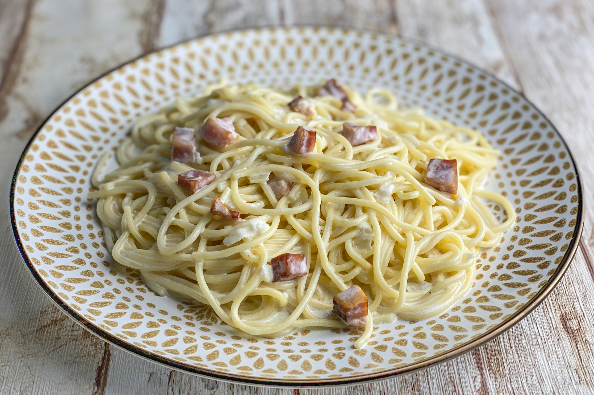

Carbonara

Description:
Carbonara Spaghetti is a typical dish from Italy, with a very soft but at the same time rich flavour that will blow your mind.
This dish is very easy to make and will make all your friends and loved ones beg you to tell them this recipe!
Ingredients:
- 500 grams of Spaghetti
- 500ml of cream
- 2 onions
- 200 grams of pressunto
- 200 grams of bacon
- 200 grams of portobello mushrooms
- 100 grams of cheese
- 2 egg yolks
- salt and pepper
Steps:
- Cook the pasta for 9 minutes in boiling water, dry it and store it for later
- Peel and cut the onions and slowly cook them in a pan until they become golden/brown
- Slice and dice the pressunto alongside the bacon and put them in the pan alongside the golden onion bits and cook everything for 5-10 minutes
- Pour the cream on the pan and stir for another 10 minutes
- Pour the cheese on top and keep stiring for another 5 minutes
- Now pour the two egg yolks and keep stiring in a constant and fast movement to completely break the yolks
- Now put some salt and pepper and give it a final stir
- Finally, put the pasta you cooked before and the sacue together and you are ready to serve
- Enjoy